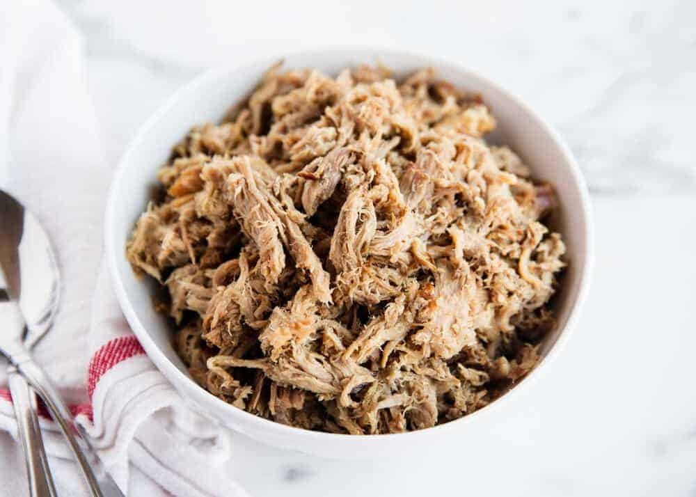

Easy Hawaiian Puaʻa Kālua (Pulled Pork)
Ingredients
- 4-5 pounds of pork shoulder or pork butt roast
- 1 tablespoon Hickory liquid smoke
- 2 teaspoons Hawaiian sea salt
Directions
- Wash the pork and then pat dry. Cut into 4 chunks, pierce with a fork, then place in the instant pot.
- Add 1 cup water in the instant pot. Pour liquid smoke over the top and then sprinkle salt on top. Place lid on top and set to high pressure. Cook for 60 minutes and then do a natural slow release for 25 minutes.
- Remove pork and shred with 2 forks. Remove any excess fat. Place back in the pot and let sit in the juices for 15 minutes, or until ready to serve. Serve over rice, in tortillas, on a slider or in a salad.
View the original recipe online
Contact Me
Send me an email!
University of Montana
32 Campus Drive
Missoula, MT 59812